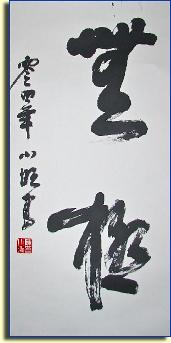

|
|||||||||||||||||||||||||||||||||||||||||||||||||||||||||||||||

Although Taijiquan, also known as T'ai Chi Ch'uan, is widely-recognized today as a system for cultivating internal health and harmony, it was originally developed as a fighting art, and is still practiced today as a potent martial art.
Its origins are in the Wen County of China's Henan Province, located along the Yellow River. It was to this fertile area, the heartland of Chinese civilization, that a famous Ming Dynasty general, Chen Wangting, retired and where he developed the first Taijiquan forms.
Chen Wangting incorporated a deep understanding of the Taoist philosophy of Chinese medicine into a system of flowing and powerful movements that balanced the body's internal energies by cultivating and moving the body's Qi (vital energy or life force). These movements are based on the principle of Yin and Yang, with alternating elements that are hard and soft, quick and slow. Also characteristic are leaping movements, quick releases of energy, and relaxed spiraling movements.
From its inception, Taijiquan was nurtured as family art, handed down and perfected from generation to generation. The Chen Family also taught a form of Taijiquan to outsiders, some of whom developed their own variations on the original forms.
Today, the original system of movements, as cultivated over time by the Chen Family, is known as Chen-style Taijiquan. It is the origin and basis for all other styles of Taijiquan, including the Yang style, the Wu style, and the Sun style. As a result of the contributions and developments made by practitioners of all styles, Taijiquan has deservedly become well-known throughout the world.
Benefits of Taijiquan
- Enhances mind and body coordination
- Enhances body awareness: posture, balance, flexibility
- Enhances health - in Asian cultures, taijiquan is frequently prescribed for a number of ailments
- Builds muscle strength and bone density
- Can be practiced by young and old
- Can be practiced anywhere, alone or in groups
- Can be tailored to people's differing abilities and needs
- Is both meditative and martial
Contact | © 2010 All Rights Reserved.
Contact | © 2010 All Rights Reserved.
© 2010-16 CXWaz